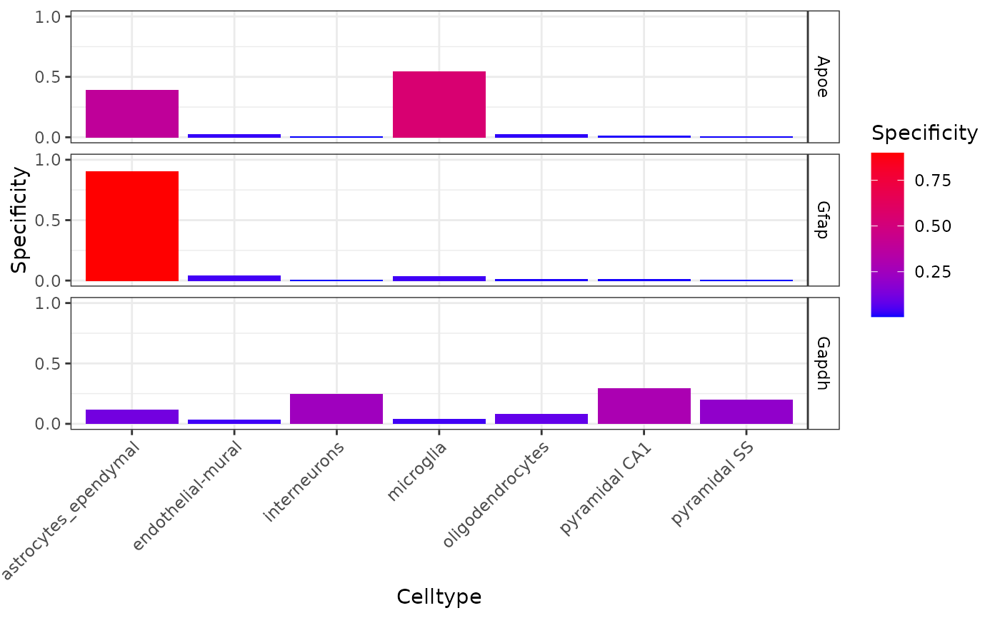

Plot CellTypeData metrics such as mean_exp, specificity and/or specificity_quantiles.
plot_ctd(ctd, genes, level = 1, metric = "specificity", show_plot = TRUE)
| ctd | CellTypeDataset. |
|---|---|
| genes | Which genes in |
| level | Annotation level in |
| metric | Which metric in the
|
| show_plot | Whether to print the plot or simply return it. |
ggplot object.
#>#>